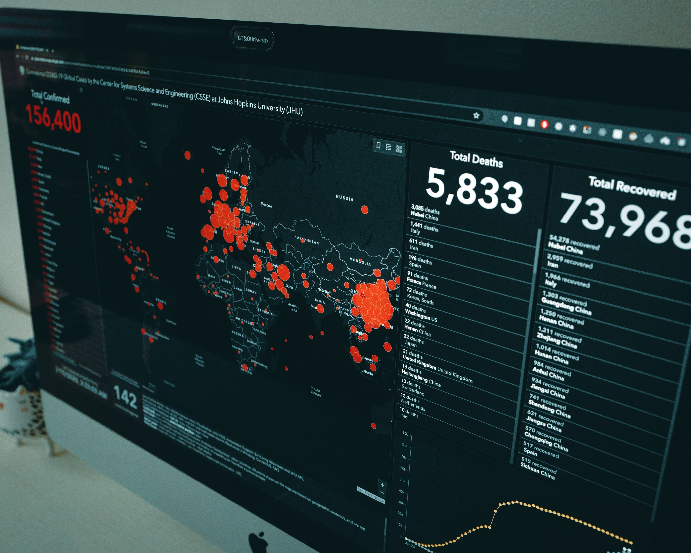

Seja bem-vindo(a) ao meu portfólio de
projetos de Análise de Dados.
Nesta página, demonstro minhas habilidades em resolver problemas de negócio utilizando conceitos e ferramentas de Análise de Dados, através de projetos com dados públicos.
Aqui, você também encontrará minhas experiências profissionais, competências, e o domínio de ferramentas e conceitos relacionados à Análise de Dados.
Sinta-se à vontade para entrar em contato através dos links no final da página.

Meu nome é Vinícius Ramos
Analista dedicado e orientado a resultados, com experiência em planejamento, controle de operações e gestão de estoque.
Especialista na elaboração de relatórios analíticos, dashboards e otimização de processos, utilizando ferramentas como Excel, SAP e Power BI.
Comprovada habilidade em liderar equipes, identificar oportunidades de melhoria e tomar decisões baseadas em dados para aumentar a eficiência.
Buscando uma posição desafiadora como Analista de Dados em um ambiente de tecnologia para aplicar minhas habilidades analíticas e de gestão.
Linguagem de Programação e Banco de dados
- SQL para extração, consulta e manipulação de dados.
- Bancos de Dados: SQLite, PostGres, MySql.
- Python básico para análise de dados (Pandas, Seaborn, Matplotlib)
Visualização de Dados
- Power BI.
- Excel para análise de dados.
Experiências Profissionais
2+ Projetos completos de Análise de Dados
Construção de soluções de dados para problemas de negócio próximos dos desafios reais das empresas, utilizando dados públicos.
8+ anos de experiência em planejamento logístico, de demandas e estoque e gestão de KPIs.
- Desenvolvi e implementei controles de operação e gestão, garantindo o reporte mensal para análise do departamento de logística.
- Liderei a implantação da Torre de Controle, aumentando a precisão do monitoramento das operações.
- Controlei a programação das operações, acompanhando trajetos e chegadas ao cliente, mantendo contato com os setores Comercial e Operacional.
- Produzi relatórios e prestei contas do projeto de implantação da Torre de Controle, identificando novas oportunidades de melhoria pela equipe.
- Conduzi reuniões e treinamentos com a equipe, promovendo a troca de sugestões e a resolução de problemas operacionais.
- Analisei operações e implementei estratégias de melhoria, resultando em um aumento significativo nos lucros.
- Recebi e escriturei notas fiscais de entradas diversas e conhecimentos de transporte.
- Emiti notas fiscais diversas no sistema SAP, com experiência nos módulos: MM, SD, LE, CO e FI.
- Atuei diretamente na operação do Centro de Distribuição, sendo responsável pelas operações de carga e descarga e gestão do time operacional.
- Analisei e controlei o estoque de produtos acabados e materiais de uso e consumo.
- Controlei e organizei inventários contínuos para evitar e solucionar divergências.
- Realizei inventários semestrais com métricas de auditoria, abrangendo uma média de 250 SKU.
- Reportei resultados de inventários à coordenação e gerência, mantendo a política "Meta Zero" para evitar perdas por vencimento no estoque.
- Estudei e redimensionei a armazenagem, aumentando entre 20 a 25% a capacidade de estoque da unidade e melhorando os processos de carga e descarga de produtos e EHS.
- Mapeei o fluxo interno da operação, implementando melhorias no processo de separação de produtos e respectivos carregamentos.
- Realizei o planejamento de demanda do estoque e controle de movimentação entre a fábrica matriz e o centro de distribuição.
- Desenvolvi projetos utilizando ferramentas e conceitos da área de Análise de Dados, organizados e construídos dentro da metodologia CRISP-DM,
- visando a entrega rápida de resultados de forma organizada e eficiente.
- Conduzi análises descritivas e diagnósticas para gerar insights e indicar caminhos estratégicos a partir de dados, tornando problemáticas antes intangíveis em resultados assertivos
- e tangíveis.
- Realizei a exploração de dados utilizando bancos de dados (SQLite) e criei relatórios dinâmicos e acessíveis no Power BI.
- Destaque para o projeto de análise descritiva e diagnóstica no dataset Olist, onde explorei os dados e criei um relatório no Power BI, proporcionando visualizações claras e acionáveis.
Projetos em Análise de Dados

Dashboard com base da Olist
Trabalhei no desenvolvimento desse dashboard construindo analise sobre produtos, pagamentos, avaliações, vendedores e vendas.
Ferramentas Utilizadas

Projeto em SQL
Projeto desenvolvido utilizando o SQLite para manipulação de dados, respondendo algumas perguntas de negócio.
Ferramentas Utilizadas

Dasboard para e-commerce
Neste projeto eu criei um dashboard para um e-commerce, em que analisei as filiais com maiores faturamentos, as regiões em que mais tiveram vendas e também fiz uma análise RFM.
Ferramentas Utilizadas
Sinta-se a vontade para entrar em contato.